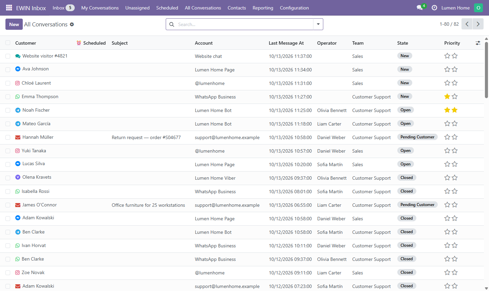
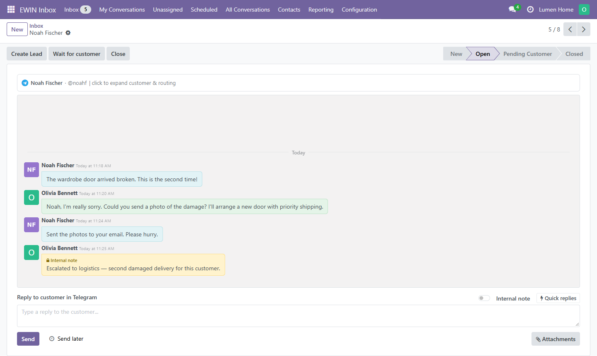
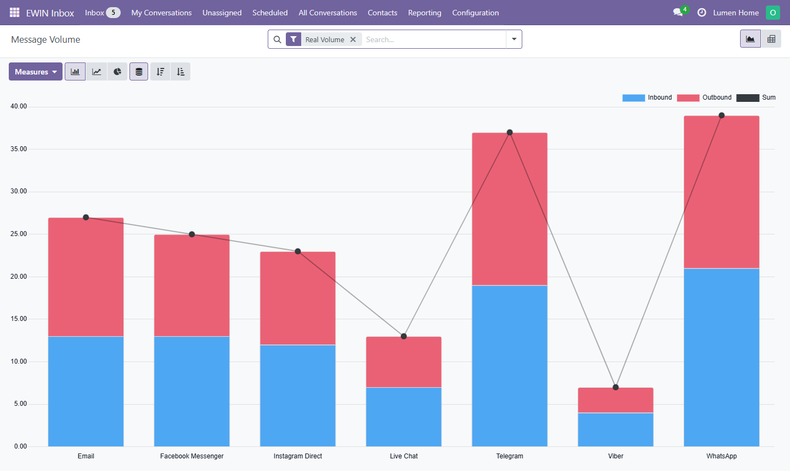

EWIN Inbox
Open-source omnichannel customer inbox for Odoo 18. Receive and
answer customer messages from Telegram, Email, Live Chat, WhatsApp, Instagram and Viber
in one Odoo-native interface — linked to Odoo contacts and mirrored into Discuss.
Odoo 18
LGPL-3
Active Development

The unified inbox: every channel in one conversation list.
Features
- Unified inbox for all connected channels
- Two-way text and media messaging
- Odoo Discuss integration
- Contact matching with
res.partner
- Agent and team assignment
- Delivery and read statuses where supported
- Canned replies
- Retry queue
- Reporting

An open conversation, mirrored into Odoo Discuss.
Channel status
Tested — manually verified using a real provider account.
Unverified — implementation is complete but has not yet been tested
against a live provider account.

Conversation and message analytics.
Requirements
- Odoo 18
- Public HTTPS endpoint for webhook-based connectors
- Provider accounts and API credentials for selected channels
- IMAP and SMTP credentials for Email
Limitations
- WhatsApp and Instagram are subject to Meta API rules and messaging windows.
- Delivery and read statuses depend on provider capabilities.
- Unverified connectors should be tested in staging before production use.
- The module does not bypass provider verification or messaging restrictions.